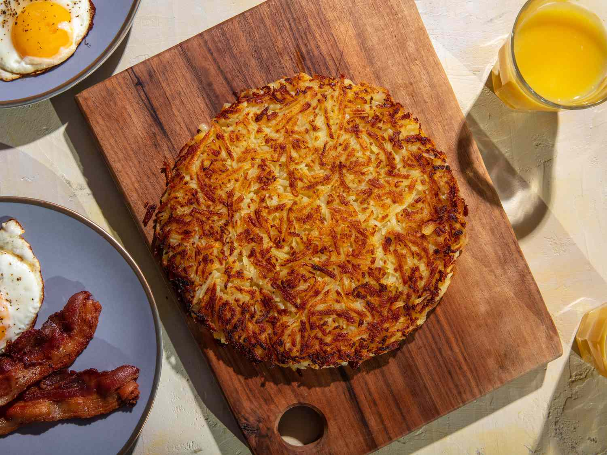

Rösti is a simple, buttery and fragrant national dish of Switzerland, a crispy crusted potato pancake with an appetizing golden color. It is a great side dish to traditional Swiss delicacies such as leberspiesschen (grilled calves' livers wrapped in bacon and sage) or émincé de veau.
Meal prep time : 35 minutes
Servings : 4